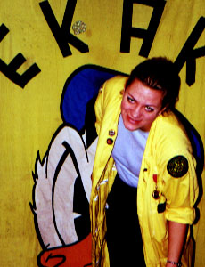
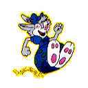

| Hej!Jag heter Molly Kanin och är korrespondenschef i EKAK. Mina uppgifterär att måla plancher, hålla koll på allt EKAK'smailande samt denna sida. Jag dokumenterar även alla häfvresultat. Puh! Som civil heterjag Malin Heiwall. |
| Molly Kanin ärflickvän med Bror Kanin. Hennes favoritsysselsättning är att studsa runt i skogen och knapra på en färsk morot. Honlyssnar alltid på vad Bror Kanin säger och tycker han ärganska bäst. Näst efter henne själv då! |